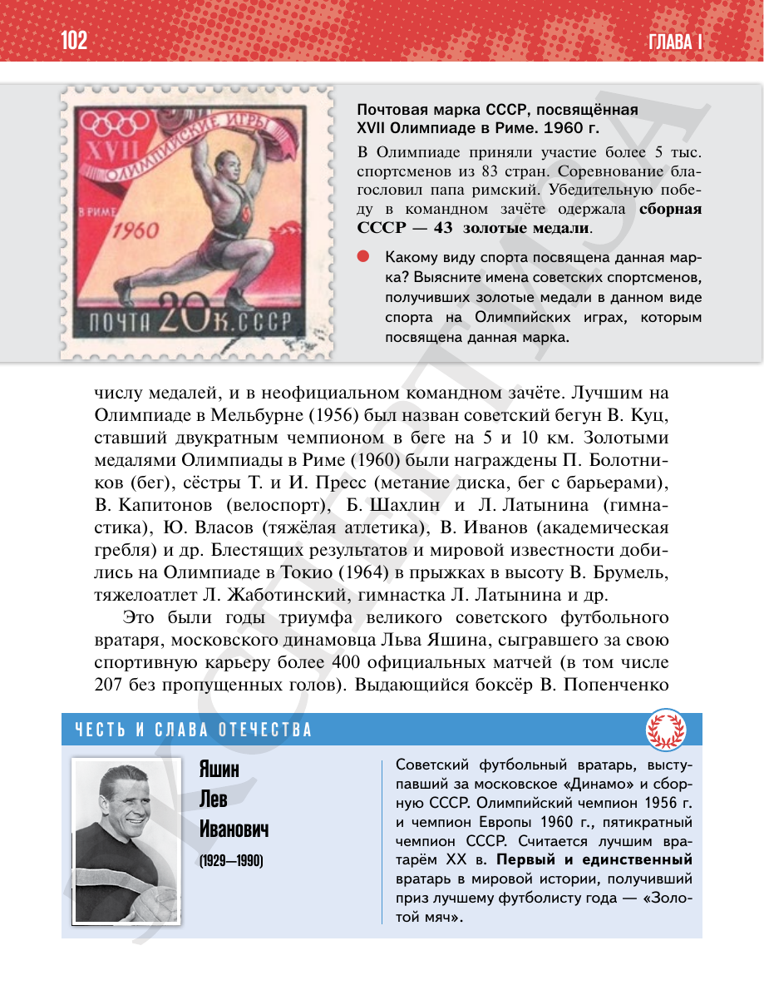

⌂
Мединский.нет
Последнее обновление: 29.08.2026
Мединский.нет
›
История России. 11 класс. Базовый уровень
›
Глава I. СССР в 1945—1991 гг.
›
§ 8. Культурное пространство в 1953—1964 гг.
›
стр. 103

← стр. 102
Оглавление
стр. 104 →
×